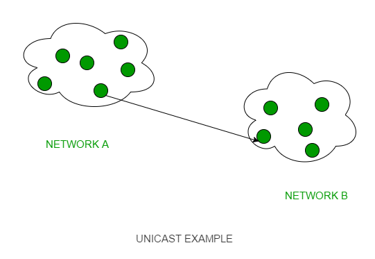
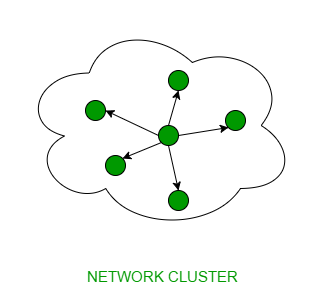
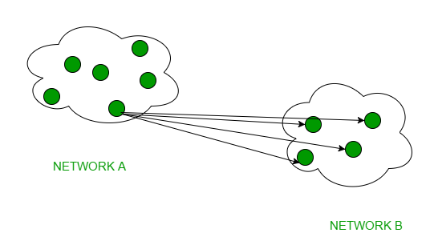

The cast term here signifies some data(stream of packets) is being transmitted to the recipient(s) from client(s) side over the communication channel that help them to communicate. Let’s see some of the “cast” concepts that are prevailing in the computer networks field.
1. Unicast –
This type of information transfer is useful when there is a participation of single sender and single recipient. So, in short you can term it as a one-to-one transmission. For example, a device having IP address 10.1.2.0 in a network wants to send the traffic stream(data packets) to the device with IP address 20.12.4.2 in the other network,then unicast comes into picture. This is the most common form of data transfer over the networks.

2. Broadcast –
Broadcasting transfer (one-to-all) techniques can be classified into two types :
- Limited Broadcasting –
Suppose you have to send stream of packets to all the devices over the network that you reside, this broadcasting comes handy. For this to achieve,it will append 255.255.255.255 (all the 32 bits of IP address set to 1) called as Limited Broadcast Address in the destination address of the datagram (packet) header which is reserved for information tranfer to all the recipients from a single client (sender) over the network.

- Direct Broadcasting –
This is useful when a device in one network wants to transfer packet stream to all the devices over the other network.This is achieved by translating all the Host ID part bits of the destination address to 1,referred as Direct Broadcast Address in the datagram header for information transfer.
This mode is mainly utilized by television networks for video and audio distribution.
One important protocol of this class in Computer Networks is Address Resolution Protocol (ARP) that is used for resolving IP address into physical address which is necessary for underlying communication.
3. Multicast –
In multicasting, one/more senders and one/more recipients participate in data transfer traffic. In this method traffic recline between the boundaries of unicast (one-to-one) and broadcast (one-to-all). Multicast lets server’s direct single copies of data streams that are then simulated and routed to hosts that request it. IP multicast requires support of some other protocols like IGMP (Internet Group Management Protocol), Multicast routing for its working. Also in Classful IP addressing Class D is reserved for multicast groups.
Questions Corner –
Practicing the following questions will help you test your knowledge. It is highly recommended that you practice them.
References –
Difference between Unicast, Broadcast and Multicast
erg.abdn.ac.uk
Difference between Unicast, Multicast, Broadcast